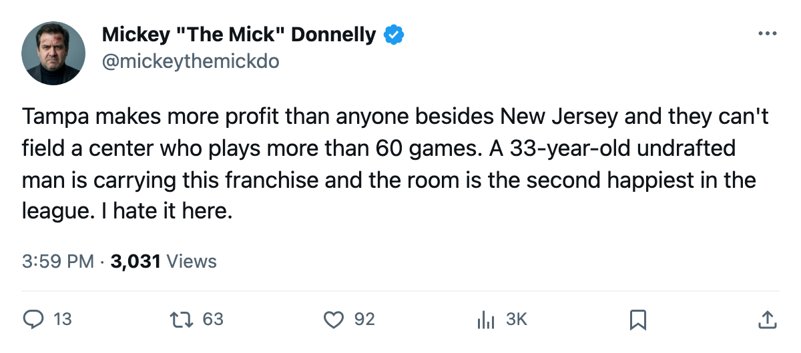
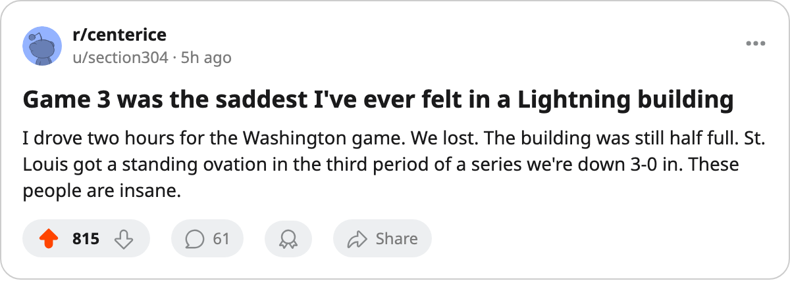

$43.72 MILLION, 96.7 MORALE, $79 A TICKET, AND MARTIN ST. LOUIS IS CARRYING THIS FRANCHISE AT 33 YEARS OLD
The second-most profitable team in hockey trails 0-3 in the second round and nobody in that building seems to notice.
 Mickey "The Mick" DonnellyColumnist, ex-goalie · The Penalty Box
Mickey "The Mick" DonnellyColumnist, ex-goalie · The Penalty Box
The  Tampa Bay Lightning Lightning banked $43.72 million this year. That is the second-highest profit in this league, behind New Jersey, and it was made on a $48.50M payroll with a ticket that costs $79 a pop. Their room posted a 96.7 morale grade. Second in hockey, behind
Tampa Bay Lightning Lightning banked $43.72 million this year. That is the second-highest profit in this league, behind New Jersey, and it was made on a $48.50M payroll with a ticket that costs $79 a pop. Their room posted a 96.7 morale grade. Second in hockey, behind  Toronto Maple Leafs. They trail Washington three games to none in the second round and their best player in the postseason is a 33-year-old undrafted man from Montreal.
Toronto Maple Leafs. They trail Washington three games to none in the second round and their best player in the postseason is a 33-year-old undrafted man from Montreal.
 Martin St. Louis87 has 6 points in 8 playoff games. He scored 114 in the regular season. He was never drafted. He is the most productive forward on a roster that should be winning this series and is not, because the second-best player on that roster appeared in 5 games out of the 9 this club has played in April and May.
Martin St. Louis87 has 6 points in 8 playoff games. He scored 114 in the regular season. He was never drafted. He is the most productive forward on a roster that should be winning this series and is not, because the second-best player on that roster appeared in 5 games out of the 9 this club has played in April and May.
 Vincent Lecavalier89 dressed for 59 of 82 in the regular season and 5 in the postseason. He scored 105 points in 59 games when he was in the lineup. His absence is the difference between a team that pushes and a team that coasts, and coasts are what you do when the revenue sheet says $97.57M and you don't need the playoff money.
Vincent Lecavalier89 dressed for 59 of 82 in the regular season and 5 in the postseason. He scored 105 points in 59 games when he was in the lineup. His absence is the difference between a team that pushes and a team that coasts, and coasts are what you do when the revenue sheet says $97.57M and you don't need the playoff money.
The owner doesn't need you to win
Here is the arithmetic that makes me angry. Tampa Bay's revenue is $97.57 million. Their payroll is $48.50 million. The owner keeps $43.72 million and his 16,191 fans keep paying $79 a ticket and the room stays 96.7 happy because nobody is going to fire anybody and nobody is going to demand more spending because the money is already here.
What does a general manager owe a man like Martin St. Louis? He owes him a center who plays 82 games. He owes him a second line that is not Dave Andreychuk and  Cory Stillman85 splitting assists. He owes him a reason to believe the room cares about winning more than it cares about the year-end statement.
Cory Stillman85 splitting assists. He owes him a reason to believe the room cares about winning more than it cares about the year-end statement.
| TB | WSH | |
|---|---|---|
| Payroll | $48.50M | $55.92M |
| Revenue | $97.57M | $84.79M |
| Profit | $43.72M | $20.44M |
| Morale | 96.7 | 96.8 |
| Ticket | $79 | $78 |
| Attendance | 16,191 | 16,203 |
| Points | 107 | 104 |
| Playoff series | 0-3 | 3-0 |
The numbers are almost the same. Washington spends $55.92M, banks $20.44M in profit, and has  Jaromir Jagr91 scoring 145 and
Jaromir Jagr91 scoring 145 and  Olaf Kolzig92 allowing 1.32 a night. The Tampa ownership group decided that 107 points and a $43.72M margin was enough, and here we are, watching a 33-year-old undrafted winger do everything he can with what he was given.
Olaf Kolzig92 allowing 1.32 a night. The Tampa ownership group decided that 107 points and a $43.72M margin was enough, and here we are, watching a 33-year-old undrafted winger do everything he can with what he was given.
Reimer and his spreadsheet will love this room
The Development Index has nobody on this roster in the top 20 risers. Nobody on this roster is below his base. The whole club is flat, steady, content. The Index is at par from top to bottom and the room is happy and the money is here and none of it will matter in 43 days when the draft starts and the rest of the league goes looking for a center while Tampa watches.
You paid $79 to watch St. Louis in the third period of a game you're down 4-2. That is what a profit looks like when nobody in the building needs you to win the Cup.

